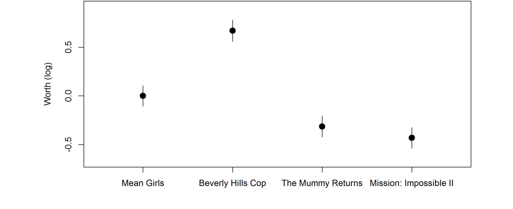
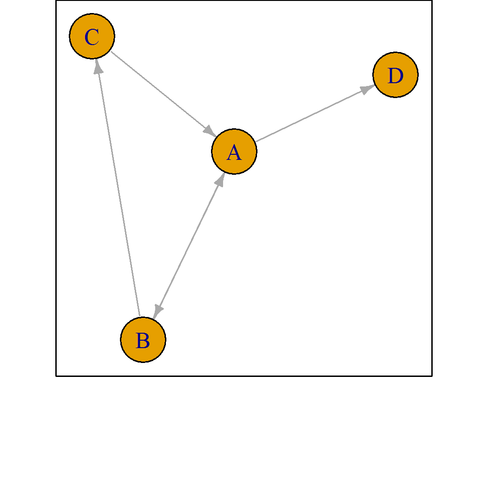
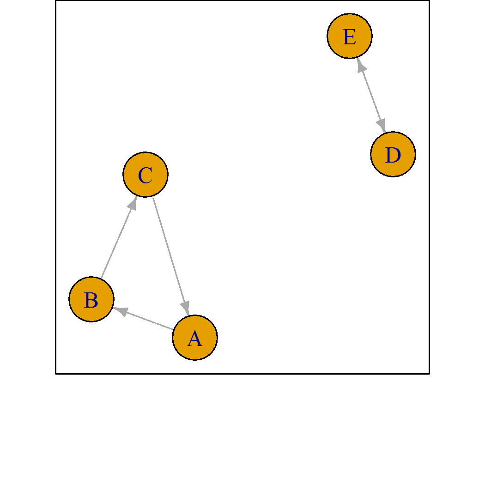
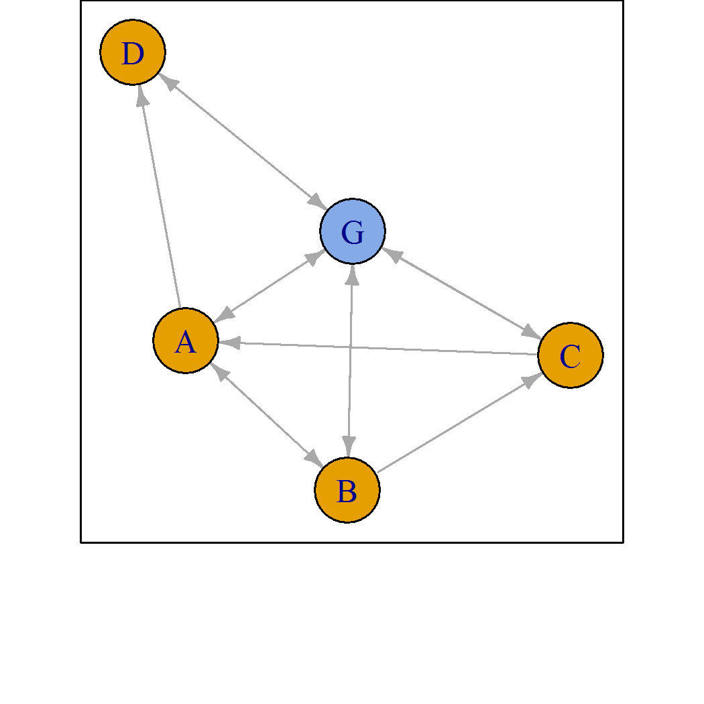
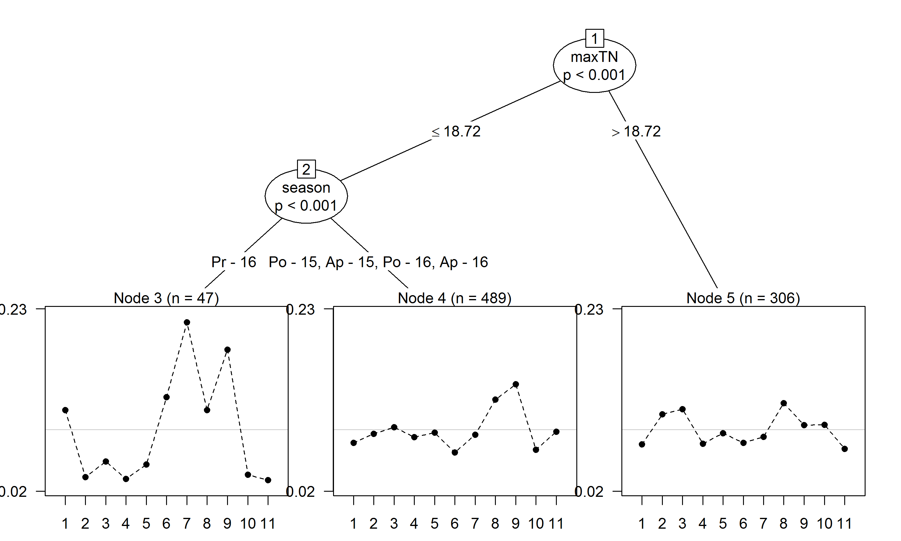

Rankings arise in a number of settings
What is the worth of each item?
Probability of choosing item A over item B unaffected by other items
Suppose we have a set of \(J\) items
\[S = \{i_1, i_2, \ldots, i_J\}\]
Then under Luce’s axiom
\[P(j | S) = \frac{\alpha_{j}}{\sum_{i \in S} \alpha_i}\]
where \(\alpha_i\) represents the worth of item \(i\).
Consider a ranking of \(J\) items as a sequence of choices.
The Plackett-Luce model is then
\[P(i_1 \succ \ldots \succ i_J) = \prod_{j=1}^J\frac{\alpha_{i_j}}{\sum_{i \in A_j} \alpha_i}\]
where \(A_j\) is the set of alternatives in choice \(j\).
PlackettLuce can be used to fit this model.
Netflix released movie rankings for the Netflix Prize.
Using read.soc from PlackettLuce, we read in a set of rankings for 4 movies
library(PlackettLuce)
preflib <- "http://www.preflib.org/data/election/"
netflix <- read.soc(file.path(preflib,
"netflix/ED-00004-00000138.soc"))
head(netflix, 2)# n Rank 1 Rank 2 Rank 3 Rank 4
# 1 68 2 1 4 3
# 2 53 1 2 4 3PlackettLuce requires the rankings to give the rank per item vs. item per rank.
We convert the rankings using as.rankings, which creates a special data structure
R <- as.rankings(netflix[,-1], input = "ordering")
colnames(R) <- attr(netflix, "item")
print(R[1:3], width = 60)# 1
# "Beverly Hills Cop > Mean Girls > Mission: Impossible II ..."
# 2
# "Mean Girls > Beverly Hills Cop > Mission: Impossible II ..."
# 3
# "Beverly Hills Cop > Mean Girls > The Mummy Returns > Mis ..."Now PlackettLuce can be used to fit the model, with frequencies as weights
mod <- PlackettLuce(R, weights = netflix$n)
coef(mod, log = FALSE)# Mean Girls Beverly Hills Cop
# 0.2306 0.4511
# The Mummy Returns Mission: Impossible II
# 0.1685 0.1498These coefficients are the worth parameters and represent the probability that each movie is ranked first.
For inference it is better to work on the log scale. Comparison intervals can be computed via qvcalc.
qv <- qvcalc(mod)
plot(qv, ylab = "Worth (log)", main = NULL, cex = 1.5, pch = 19)
The Netflix rankings are an example of strict, complete rankings.
In other applications we might have
PlackettLuce implements a generalized model which handles ties and sub-rankings.
Now consider a ranking of sets \(C_1 \succ C_2 \succ \ldots \succ C_J\).
The generalized model with ties up to order \(D\) is
\[ \prod_{j = 1}^J \frac{f(C_j)}{ \sum_{k = 1}^{\min(D_j, D)} \sum_{S \in {A_j \choose k}} f(S)} \]
where
\[f(S) = \delta_{|S|} \left(\prod_{i \in S} \alpha_i \right)^\frac{1}{|S|}\]
In some cases, the underlying network of wins and losses means the worth cannot be estimated by maximum likelihood.


PlackettLuce connects the network by adding npseudo pseudo-rankings with a ghost item.
nspeudo = 0.5
The worth of items may vary with the ranking conditions, e.g. judge making the ranking.
PlackettLuce works with partykit to fit Plackett-Luce trees
A citizen science trial of bean varieties in Nicaragua:
The example on ?beans tidies the original data
example("beans", package = "PlackettLuce", echo = FALSE)The original beans data frame has 842 rows: one per farm.
The 3-way and 2-way rankings are collated in a rankings object
R[1,]# [1] "PM2 Don Rey > SJC 730-79 > BRT 103-182"R[3368,]# [1] "Local > SJC 730-79"The rankings are grouped by farm
G <- grouped_rankings(R, rep(1:nrow(beans), 4))
format(head(G, 2), width = 50)# 1
# "PM2 Don Rey > SJC 730-79 > BRT 103-182, Local > BRT 103-182, ..."
# 2
# "INTA Centro Sur > INTA Sequia > INTA Rojo, Local > INTA Rojo, ..."Use pltree with max depth 3 and \(\ge\) 5% records in each group
beans$year <- factor(beans$year)
tree <- pltree(G ~ ., data = beans[c("season", "year", "maxTN")],
minsize = 0.05*n, maxdepth = 3)
Future work
More details